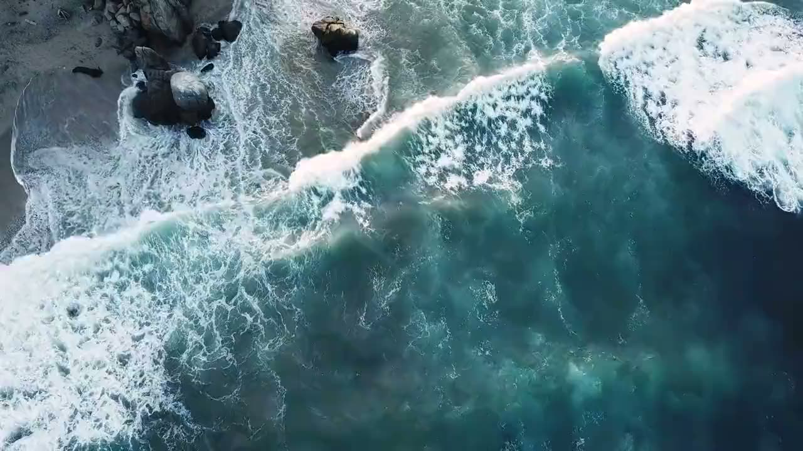

The days you're not fishing.
A fishing week is never only fishing. The days ashore run through our tour partner, Infinite Discoveries — rainforest, waterfalls, parks. The days on the water never leave our own boat: an island run, a sunset cruise, a surf trip. One thread books all of it.
One trip. One thread. The whole week answers to the same phone.
Infinite Discoveries is our tour partner, and it works as a broker — it connects you to the people who actually run each day, operators on this coast it knows by name. That gets said plainly, same as everywhere else on this site: a partner, named, nothing moving behind your back.
The reason the partnership exists is simple. Guests kept asking what else to do with the week, and the honest answer was always specific — this canopy line, that waterfall, this stretch of park, that beach with no crowd on it. Booking it through the same thread beat handing anyone a brochure.
The part that matters for you: the week gets built around the fishing days. Nobody should be climbing into a zipline harness at seven the morning after a full day offshore, and nobody books you one. The boat sets the fixed points; the tours fill in around them.
No rate card here either. Days ashore get priced by the operator running them, and those numbers are Infinite Discoveries' to quote. Ask in the thread — dates, crew, what you want out of Costa Rica — and a plan comes back.
The fishing days are fixed points. The rest of the week gets built around them.
Brokered through Infinite Discoveries — our tour partner, operators it knows by name.
- 01 Canopy & ziplines The rainforest, from above The hills behind this coast are rainforest, and the classic way through them is on a cable. Good for mixed groups — the nervous ones go once and then get back in line.
- 02 Waterfalls Swim under one Short jungle hikes that end in cold, clear pools. The antidote to a day of salt and sun, and the photo everyone actually sends home.
- 03 The parks Carara · Manuel Antonio Carara National Park is twenty minutes up the road — scarlet macaws live there. Manuel Antonio is about an hour south: sloths, monkeys, and the beach at the end of the trail. Both are real days, not gift-shop stops.
- 04 Tortuga Island Our boat · a full island day White sand, water clear enough to snorkel, and a day that needs no rods. This one is not brokered — it runs on Great Marlin, your group and nobody else.
- 05 Sunset cruise Our boat · the last hour of light The coast goes gold, the heat lets go, and the boat idles home in the dark. Ours as well — same cockpit, no rods, easy clothes.
- 06 The surf day Our boat · not brokered The third of the boat days: a reef we don't name — white sand, an A-frame over reef, no road in. All three live with the fishing trips, over on the rates page.
-
[ 01 ]
Tell us the crew
Ages, nerve, who gets seasick, who needs a nap by two. A day that fits the group beats a famous one that doesn't.
-
[ 02 ]
The week gets built
Fishing days first, tours in the gaps, and the weather gets a vote — green-season rain arrives after two in the afternoon, so mornings are for doing and afternoons are for porches.
-
[ 03 ]
The rides come with it
Ground runs through our transport partner, so every day ashore includes the getting there and the getting back. That story is its own page.
Fill the week.
Say who's coming and what they want out of Costa Rica. The answer comes back as a plan.